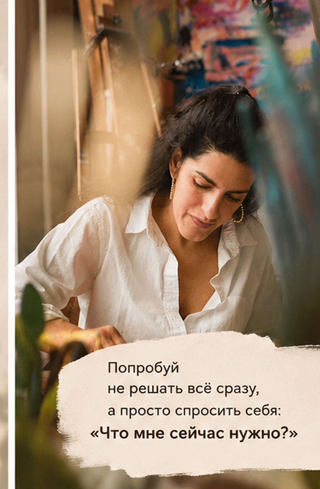
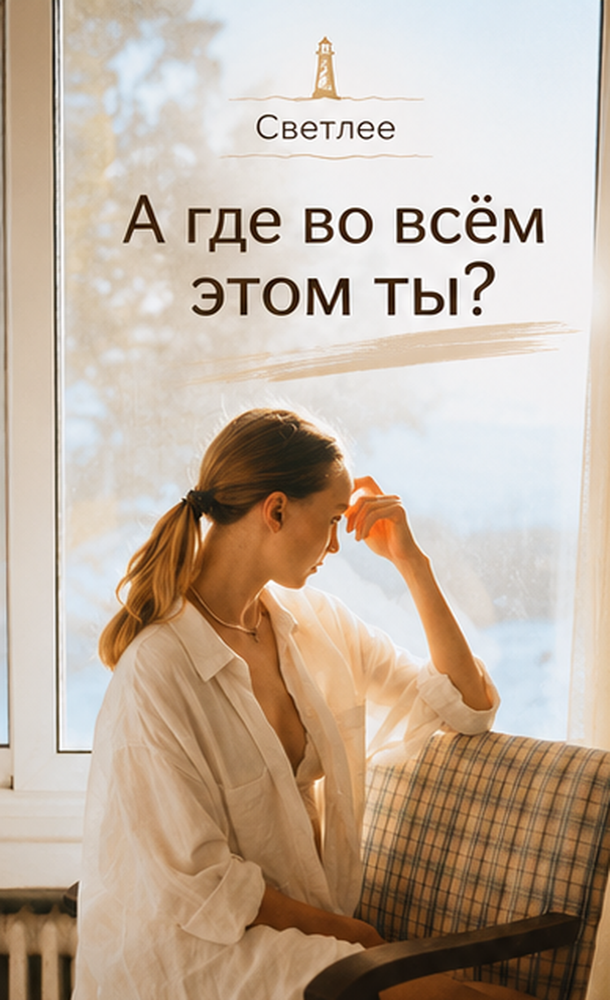
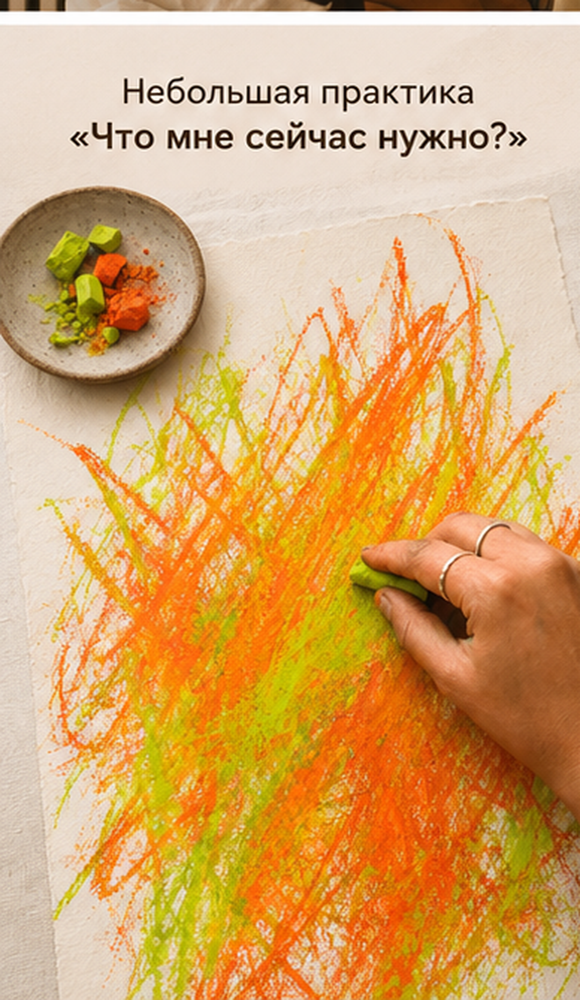
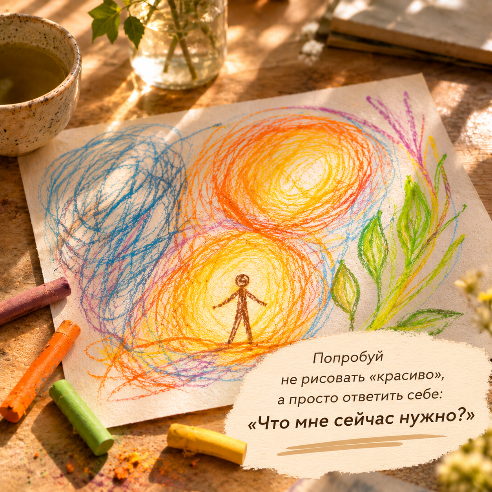
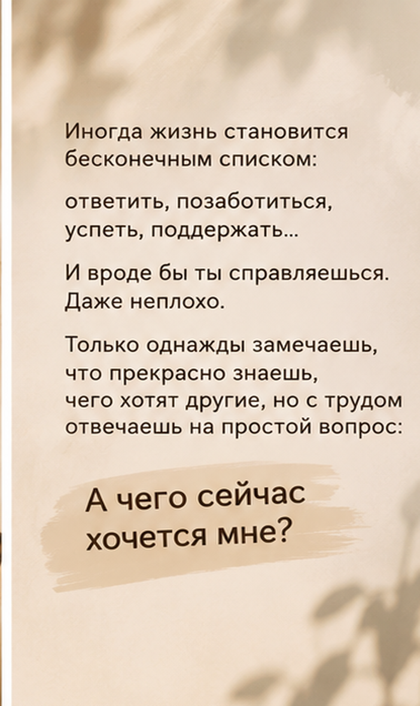
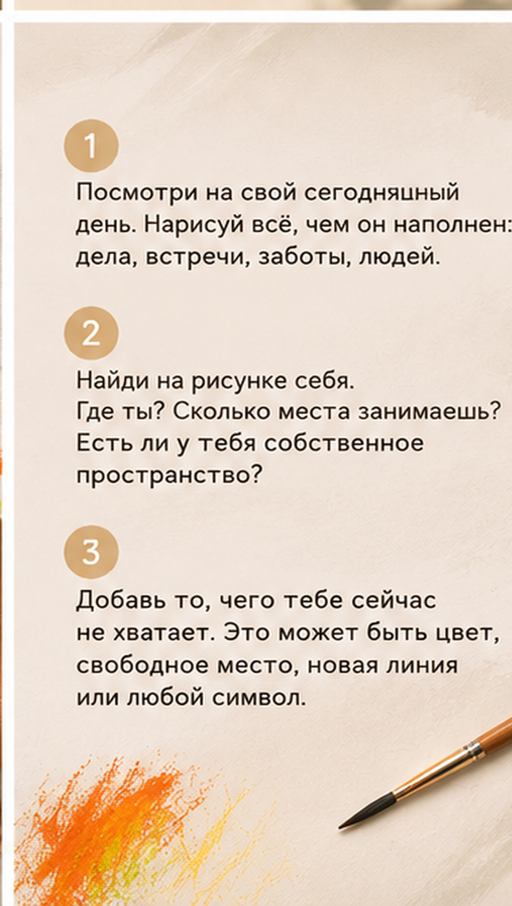
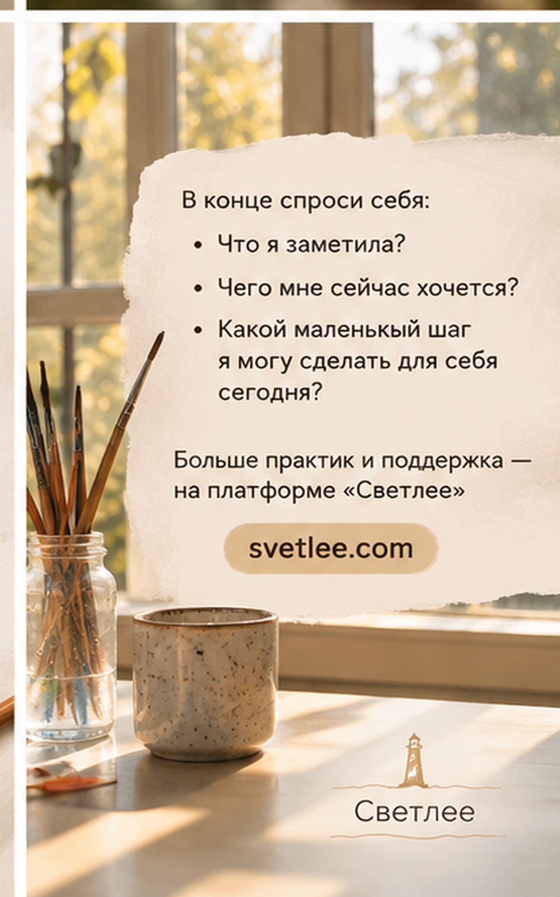

А где во всём этом ты?
Небольшая практика, которая помогает вернуть внимание к себе и услышать свои настоящие потребности.
Иногда жизнь становится бесконечным списком того, что нужно сделать. Ответить. Позаботиться. Не забыть. Успеть. Помочь. Поддержать.
И вроде бы всё нормально. Ты справляешься. Даже неплохо.
Только однажды замечаешь, что прекрасно знаешь, чего хотят другие, но с трудом можешь ответить на простой вопрос:
Не глобально. Не через пять лет. А прямо сейчас.
Может быть, тишины. Может быть, разговора. Может быть, чтобы кто-нибудь хотя бы на время перестал от тебя чего-то ждать. А может быть, ты пока не знаешь.
Предлагаю начать с маленького вопроса: «Что мне сейчас нужно?»


Что мне сейчас нужно?
Здесь не нужно уметь рисовать. Линии, пятна и символы могут быть любыми. Важнее не результат, а то, что ты замечаешь в процессе.
Нарисуй свой день
Представь, что сегодняшний день помещается на листе бумаги. Изобрази всё, чем он наполнен: дела, встречи, обязанности, заботы, людей. Это могут быть линии, пятна или условные знаки.
Найди на рисунке себя
Где здесь ты? Сколько места занимаешь? Есть ли у тебя собственное пространство? Не нужно оценивать рисунок или пытаться сделать его красивым.
Добавь то, чего не хватает
Может быть, это цвет, свободное пространство, ещё одна фигура или линия, отделяющая тебя от чего-то. Посмотри, как изменился рисунок.

После практики спроси себя:
- Что я заметила?
- Чего мне сейчас хочется?
- Какой маленький шаг я могу сделать для себя сегодня?
Не обязательно искать большой ответ. Иногда достаточно заметить совсем небольшую потребность. Можно сохранить рисунок и вернуться к нему через несколько дней.
Посмотреть короткую версию практики в картинках



Если хочется продолжить
На «Светлее» есть другие творческие практики и возможность найти специалиста, с которым можно исследовать то, что сейчас происходит в жизни. Не обязательно разбираться со всем в одиночку.